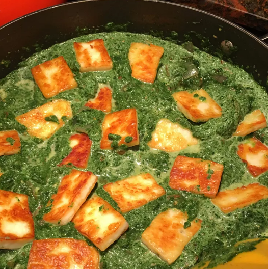

Saag Paneer
Saag paneer is a classic Indian dish of cooked spinach studded with cubes of fried paneer cheese. Thickened with cream or coconut milk, it's a hearty and filling vegetarian meal.

Ingredients:
- 2 bunches spinach, roughly chopped
- 1 bunch fenugreek leaves, roughly chopped
- 3 tablespoons canola oil, divided
- ½ pound paneer, cubed
- 1 teaspoon cumin seeds
- 1 onion, thinly sliced
- 3 cloves garlic, minced
- 1 teaspoon grated fresh ginger
- 1 tomato, diced
- 2 teaspoons garam masala
- ½ teaspoon ground turmeric
- ½ teaspoon cayenne pepper
- ½ cup heavy whipping cream
- salt to taste
Steps:
- Bring a large saucepan of water to a boil; add spinach and fenugreek and cook until wilted, about 3 minutes. Drain well; transfer to a food processor and blend until finely chopped, about 5 pulses.
- Heat 1 tablespoon canola oil in a large skillet over medium heat; add paneer cubes and fry until browned on all sides, about 5 minutes. Transfer paneer onto a plate.
- Heat remaining 2 tablespoons canola oil in the same skillet over medium heat; add cumin seeds and fry until lightly toasted and aromatic, about 3 minutes. Add onion; cook and stir until softened, 4 to 5 minutes. Add garlic and ginger and stir to coat. Stir in tomato, garam masala, turmeric, and cayenne pepper; cook until tomato breaks down, stirring often, about 10 minutes.
- Stir in pureed spinach mixture, paneer cubes, and cream; add salt to taste. Reduce heat to low, cover, and simmer for 15 minutes, stirring occasionally.
- You can substitute coconut milk for the cream.